Two cats — Opus 5
A multi-pass build where blockout, material, surface, and lighting can be inspected independently.

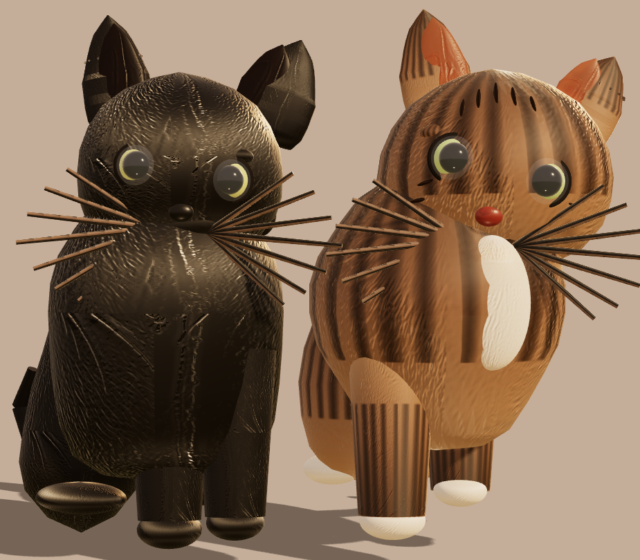
A field guide to image-to-3D experiments. Each study starts with the same question: how much structure can be recovered from a single reference?
Reference / render / live scene
A multi-pass build where blockout, material, surface, and lighting can be inspected independently.

A reconstruction informed by a GLB source, with the original asset available as a separate viewer.
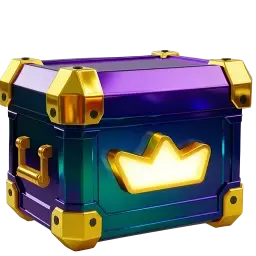
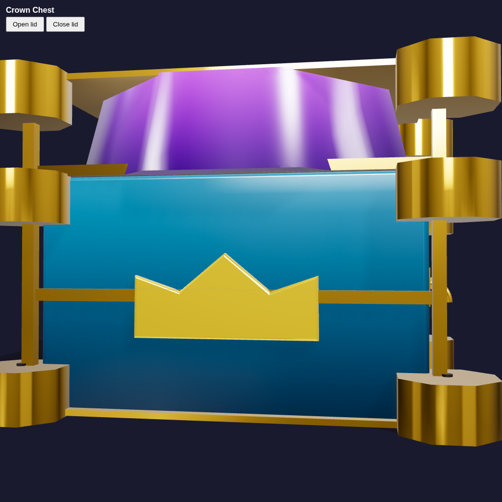
Procedural stylized cat pair built from the image reference.

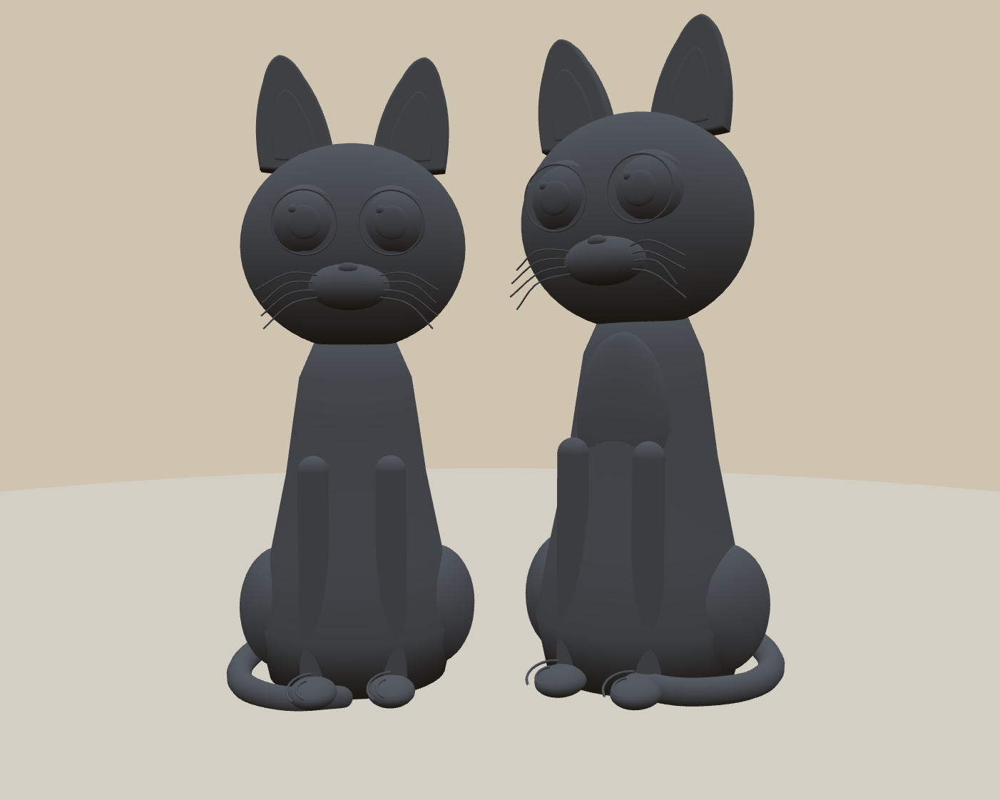
A procedural solution with a complete interactive review pass.

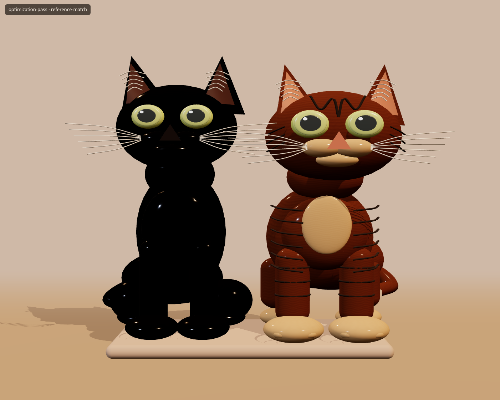
A baseline procedural reconstruction of the original pair.
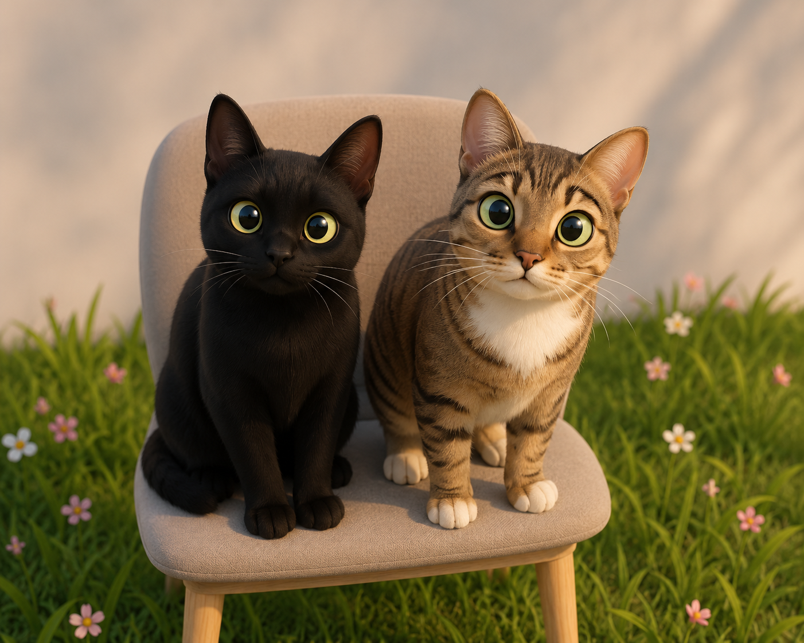
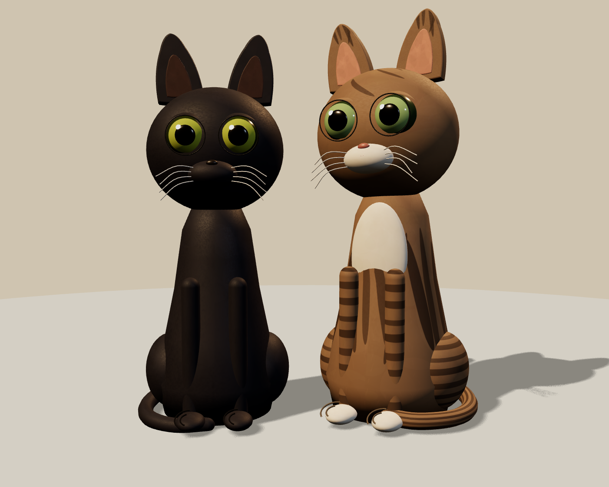
A procedural treasure chest reconstructed from the image alone.

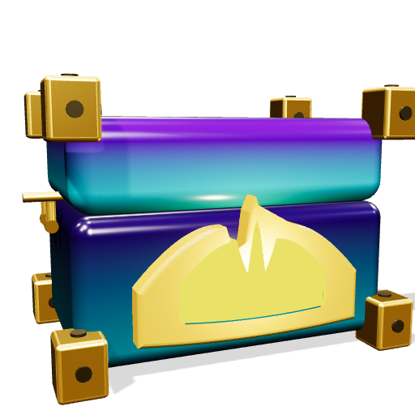
Eight-pass procedural chest from the image alone, with a TRELLIS GLB kept alongside purely as a render baseline.
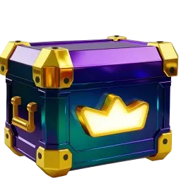
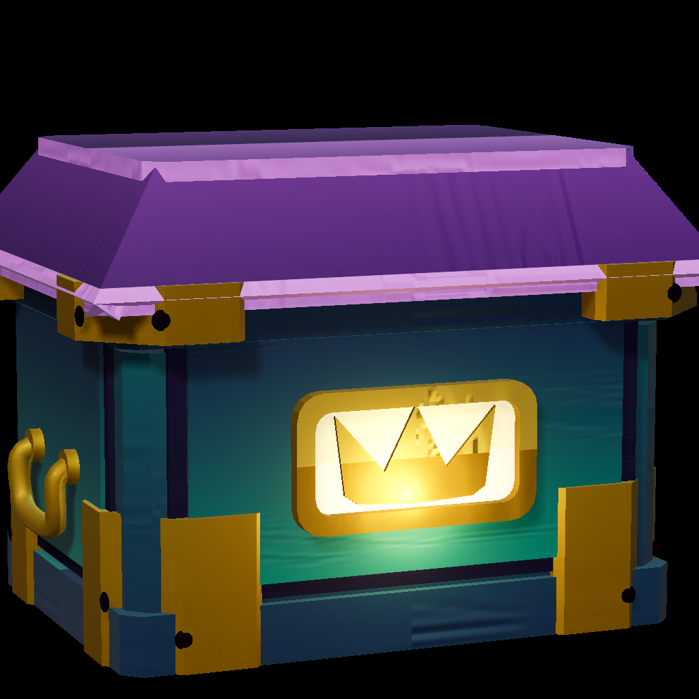
Edward Elric's watch rebuilt as procedural Three.js code, with a side-by-side against the TRELLIS reference mesh.
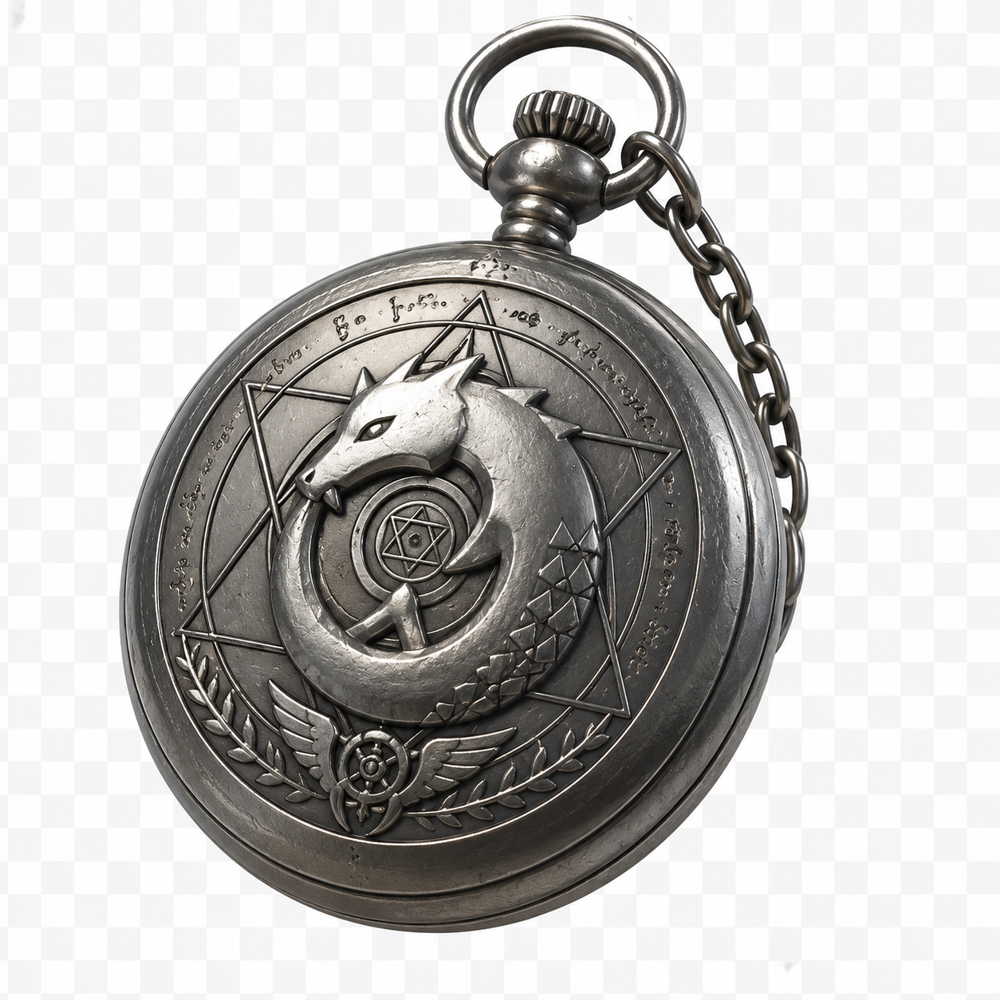
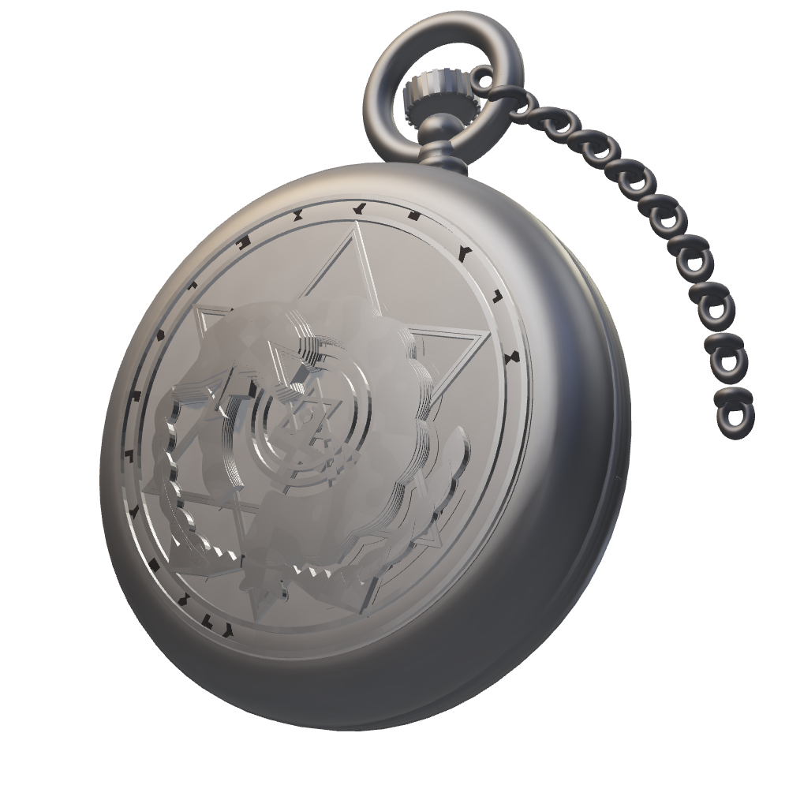
Both cats rebuilt as independent eight-pass procedural factories, with per-cat side-by-sides against the TRELLIS reference meshes.
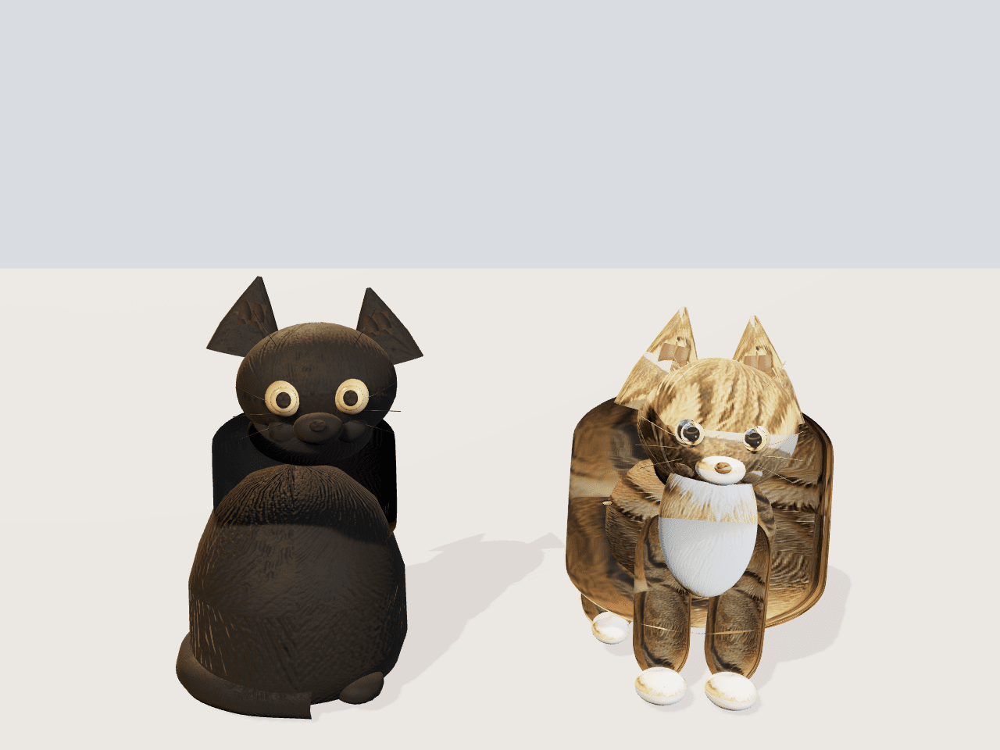